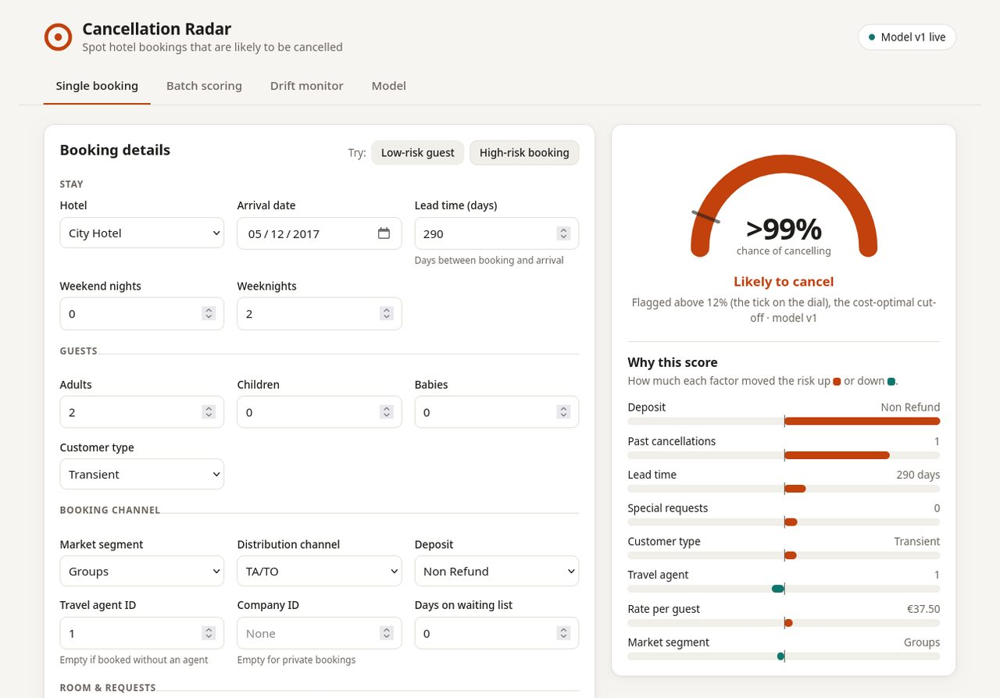

P-01● Live demobinary classification · 119,390 bookings · time-based split
Cancellation Radar
Scores every new hotel booking for cancellation risk at the moment it is made, explains the score, and flags only the bookings worth acting on.
- 94% of cancellations caught
- −76% cost of mistakes
- 0.824 ROC-AUC
- XGBoost
- Optuna
- SHAP
- MLflow
- DVC
- Pandera